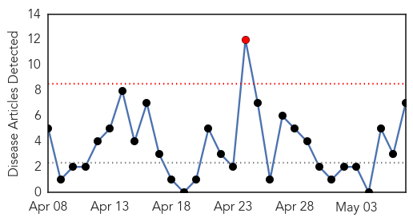
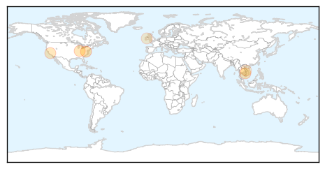

30 Day Trends
Web: 1 alerts, 0 warnings
Twitter: 0 alerts, 0 warnings
Top Articles:
- 0.915
- Hepatitis C rates jump in four central Appalachian states: CDC
- 0.828
- VN has alarming numbers of viral hepatitis cases
- 0.801
- With 150 cases is Indiana HIV outbreak reaching its peak?
- 0.798
- Wales: Serious skin infections linked to tattoo studio in Newport
- 0.767
- Indiana HIV outbreak may be peaking, officials say
- 0.575
- Seroprevalence of Hepatitis E virus infection in the Irish pig population
- 0.509
- Reforms to improve immunisation
Top Tweets:
-
No tweets found for May 07, 2015
Web/News Articles
Tweets

Article Locations
Article Confidences